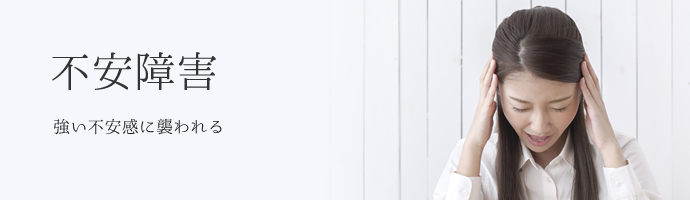

- こころの病について
- >
- 不安障害

不安障害について
私たちは誰でも、何らかの不安を感じながら生きています。ただ、普段なら感じないような大きな不安を感じて、それが続いて日常生活の大きな妨げになるようだと困ってしまいます。このような状態を「不安障害」と呼びます。
例えば、
例えば、
- 「電車に乗ると息が苦しくなって乗っていられない」（パニック障害）
- 「人前で話すのが嫌で仕事に支障が出る」（社会不安障害）
- 「いろんなことが心配で疲れやすくなったり、眠れなくなったりして生活できない」（全般性不安障害）
不安障害の代表例
- ●パニック障害
- ●広場恐怖
- ●分離不安障害
- ●選択性緘黙（かんもく）
- ●社会不安障害
- ●全般性不安障害
- ●特定の恐怖症
- ●物質・薬物誘発性不安障害
- ●身体疾患による不安障害
（米国精神医学会（APA）の精神疾患の診断分類 DSM-5）
不安障害の主な症状
- ■病的不安
- 不安障害の主症状は不安です。不安とは漠然とした恐れの感情で、誰でも経験するものです。
しかし、はっきりした理由がないのに、あるいは理由があってもそれと不釣り合いに強く、または繰り返し起きたり、いつまでも続いたりするのが病的な不安です。
不安のあらわれ方にはいろいろな形があり、それによって不安障害の下位分類がなされています（ただし原因の明らかなものは原因によって分類）。
以下に、パニック障害での症状を解説します。 - ■パニック発作
-
パニック発作は、パニック障害の特徴的な症状で、急性・突発性の不安の発作です。突然の激しい動悸、胸苦しさ、息苦しさ、めまいなどの身体症状を伴った強い不安に襲われます。多くの場合、心臓発作ではないか、死んでしまうのではないかなどと考え、救急車で病院へかけつけます。しかし症状は病院に着いたころにはほとんどおさまっていて、検査などでもとくに異常はみられません。そのまま帰宅しますが、数日を置かずまた発作を繰り返します。
パニック発作は恐怖症、強迫性障害、PTSDなどのほかの不安障害、うつ病、統合失調症、身体疾患や物質関連障害などでも同様の症状がみられますが、パニック障害で経験するパニック発作は、「予期しない発作」です。原因やきっかけなしに起こる、いつどこで起こるかわからない発作を「予期しない発作」といいます。恐怖症の人が（たとえばヘビ恐怖症の人が恐怖対象のヘビに出会った時）に起こるパニック発作は、「状況依存性発作」であり予期しない発作ではありません。ただし、パニック障害の患者さんに、両方のタイプの発作が起こることはありえます。
- ■予期不安
- パニック障害では通常は「また発作が起こるのではないか」という心配が続きますが、これを「予期不安」といいます。発作を予期することによる不安という意味です。
- ■広場恐怖
- 「広場恐怖」は、パニック発作やパニック様症状が起きた時、そこから逃れられない、あるいは助けが得られないような場所や状況を恐れ、避ける症状をいいます。そのような場所や状況は広場とは限りません。一人での外出、乗り物に乗る、人混み、行列に並ぶ、橋の上、高速道路、美容院へ行く、歯医者にかかる、劇場、会議などがあります。広場というより、行動の自由が束縛されて、発作が起きたときすぐに逃げられない場所や状況が対象になりやすいことがわかります。パニック障害ではほとんどの患者さんがこの広場恐怖を伴っていて、日常生活や仕事に支障を来す場合が多くみられます。
サラリーマンであれば電車での通勤や出張、主婦であれば買い物などが、しばしば困難になります。誰か信頼できる人が同伴していれば可能であったり、近くであれば外出も可能であったりしますが、その結果、家族に依存したり、行動半径が縮小した生活を余儀なくされる場合が多く、広場恐怖を伴うパニック障害によるQOL（Quality of Life, 生活の質）の低下は、見かけ以上に大きいといわれています
不安障害の治療法
-
■M&L心理療法
安心、安全感をベースに治療関係性を重視しながら進めていく心理療法です。 -
■ハコミセラピー
西洋の心理学と仏教やタオイズムの東洋的思想を融合した心理療法で、マインドフルネスをベースに気付きと治癒を目指す治療法です。 -
■認知行動療法
個人の行動と認知に焦点を当て、そこに含まれる行動上の問題、認知の問題、感情や情緒の問題などを合理的に解決するために構造化された治療法です。 -
■マインドフルネス瞑想法
身体感覚や内面の状態に焦点を当てて「ありのままの自分を見つめて受け入れていく」瞑想法です。 -
■薬物療法
必要とされる場合、東西の薬を処方します。